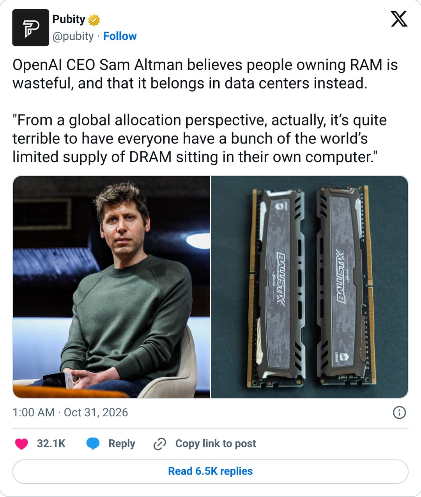
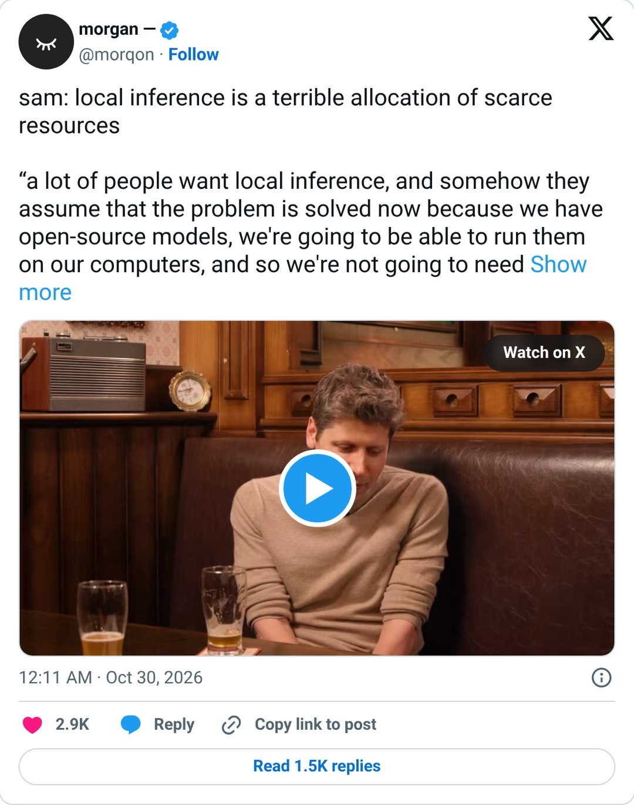
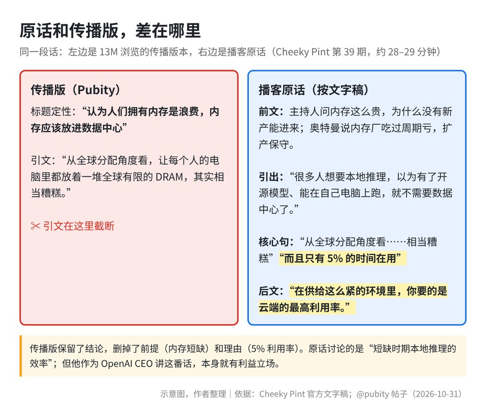
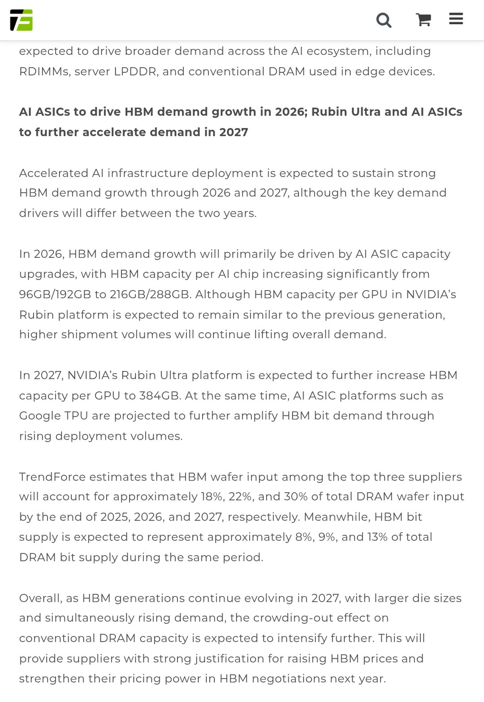
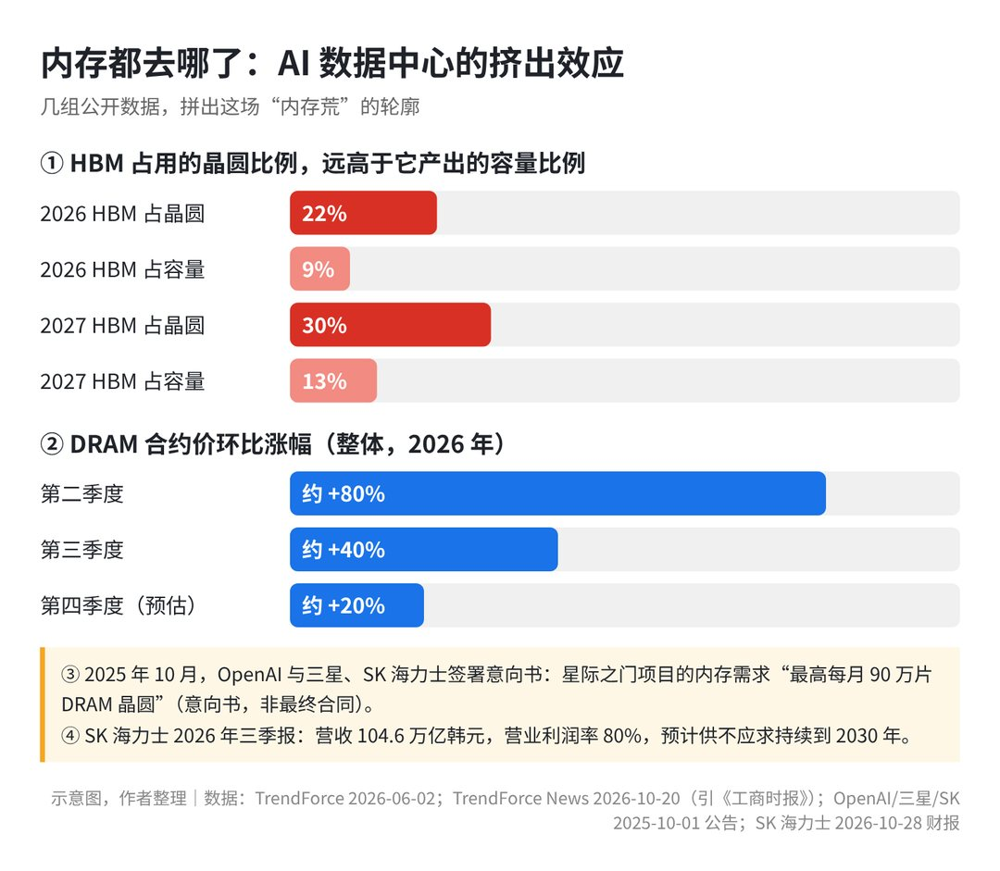
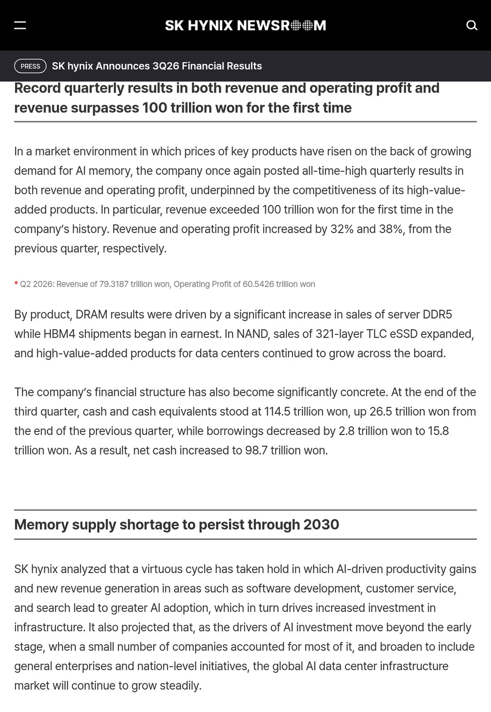

一条简短的社交动态，在一天之内积累了约 1300 万次浏览。
10 月 31 日，Pubity 发帖称：OpenAI 首席执行官奥特曼认为，普通人拥有内存是一种浪费，内存应该放进云端数据中心。
这句转述很快传开，引起了不少硬件消费者的强烈反感。

大家的不满很直接。过去几个季度，全球内存价格经历了一轮明显的上涨周期。
TrendForce 新闻频道引用《工商时报》的数据显示，整体 DRAM 合约价在 2026 年二季度环比上涨约 80%，三季度环比上涨约 40%，四季度预估环比还要涨约 20%。
这里的 DRAM 就是我们常说的运行内存，断电后数据清空，负责临时存放电脑或手机正在运行的程序和数据。
合约价则是芯片制造厂与大客户按季度商定的批量采购交易价格，一般会提前反映消费端电子产品的价格变化。
也就是说，大家在攒机、买笔记本或换手机时，正承受着硬件物料成本上涨的压力。
偏偏说这话的人，所在的公司去年刚和三星、SK 海力士签下“最高每月 90 万片 DRAM 晶圆”的意向书。
在这个节点嫌个人电脑内存利用率低，难怪很多人听了不舒服。
一、问题：一句话为什么能刷屏
传播版本与官方原话到底差在哪
我们需要先放开情绪，看看这段对话最初发生的场景。
10 月 29 日，Stripe 联合创始人 John Collison 主持的播客 Cheeky Pint 上线了第 39 期节目，嘉宾正是奥特曼。
最早带视频片段传播这条讨论的，是 @morqon 在 10 月 30 日 00:11（台北时间）发出的帖子。

随后，Pubity 在 10 月 31 日 01:00（台北时间）发布了二次加工的短帖，略去了前因后果，直接将核心内容归结为“浪费”。

根据播客官方文字稿，这段对话在“Compute”（算力）章节里，该章节从第 25 分 17 秒开始，相关的话大约在第 28–29 分钟。
当时 John Collison 提问：既然内存这么贵，为什么市场上没有新的产能供给快速跟进？
奥特曼在回应中探讨了产能瓶颈，原话里其实没有出现“浪费”（wasteful）这个词，也没有说过“内存应该属于数据中心”。另一句流传很广的“本地推理是对稀缺资源的糟糕分配”，是最早发视频那个账号的概括，也不是原话。
他的原话意思是：许多人希望在本地运行模型，以为有了开源模型就不再需要数据中心。
但从全球资源配置的角度来看，让每个人的电脑里都放着一堆有限的 DRAM 供应，而且只有 5% 的时间在使用，“相当糟糕”（quite terrible）。
他随后补充道：在当前供给极度受限的环境里，应该追求在云端实现最高利用率（maximum utilization in the cloud）。
真正值得讨论的问题是什么
弄清原话，不代表这只是一次断章取义或公关口误。
Tom's Hardware 在报道里指出，这个说法默认了两件事：数据中心扩建不会放缓，24 小时跑 AI 比日常办公、上网、打游戏更有价值。
PCMag 则提到，OpenAI 的合作伙伴英伟达和微软，本身都在推广能本地跑 AI 的电脑。
所以争议的焦点，落在了当下产能紧缺的产业现实上。
当物理晶圆和高端存储颗粒成为瓶颈，谁有资格来界定有限资源怎么分配才算合理？
当大模型服务商试图通过规模效应把产能尽可能集中到云端，个人用户与独立开发者的本地硬件控制权，会不会受到挤压？
这才是整起事件背后值得讨论的核心。
二、分析：内存为什么这么紧，奥特曼对在哪里、漏了什么
HBM 挤占晶圆与厂商的谨慎扩产
要看清这场争论，得先弄明白眼下内存市场为什么会这么紧张。
最直接的原因，是高带宽内存（HBM）对通用内存晶圆产能的挤占。
HBM 是把多层 DRAM 芯片垂直堆叠在一起的高性能内存，专门供给 AI 训练和大规模推理芯片使用。
晶圆是制造芯片的基础硅圆片，所有的计算机芯片和内存颗粒都在晶圆上加工制成。
TrendForce 在 2026 年 6 月 2 日发布的数据展示了这种产能流向：HBM 占三大原厂 DRAM 晶圆投片的比例，预计在 2026 年底达到约 22%，到 2027 年底将达到约 30%。
同期 HBM 产出的位元（可以理解为存储容量）只占约 9% 和 13%。HBM 堆叠工艺复杂、芯片面积大，同样一片晶圆能做出的容量少得多。

在我看来，这意味着大量晶圆产能流向了 AI 专用硬件，留给普通电脑和手机的产出被挤压了。

存储厂商自身扩产也很谨慎。
奥特曼在播客中说，内存厂商过去几十年里大约投了 200 亿美元资本开支、只赚回 190 亿；他说如今每家一年可能赚约 1000 亿美元自由现金流，但因为对当年的下行周期记忆深刻，扩产态度保持得非常保守。
头部买家签下的长约，又把剩下的产能提前锁住了一大块。
长约是客户与芯片制造厂签订的跨年度长期供货保证协议，通常会锁定未来几年的保底采购量与产能分配。
SK 海力士在 2026 年 10 月 28 日公布的三季度财报中披露：单季营收达到 104.6 万亿韩元，首次突破百万亿关口，营业利润率达到 80%。
SK 海力士官方预计供不应求的局面可能持续到 2030 年；他们与 14 家客户签下的长约，已经覆盖了 2027 至 2028 年超过一半的产能。

与此同时，OpenAI 在 2025 年 10 月 1 日就与三星、SK 海力士签署了意向书（LOI），为其规划中的数据中心提出了“最高每月 90 万片 DRAM 晶圆”的采购目标。
虽然媒体估算这一数字约占当时全球产能四成（待确认），而且意向书不是最终合同，但我判断，这样量级的需求信号会让厂商更愿意把产能优先留给头部客户。
奥特曼在播客中也提到，OpenAI 已经自研了芯片，正在学习自己建设数据中心，尝试做大量低成本的算力。
有产业动态显示，奥特曼于 10 月 31 日在韩国会见了三星高管商讨内存供应（待确认）；此前美光也传出退出 Crucial 消费级品牌业务的消息（待确认）。
在供给偏紧的背景下，TrendForce 在 9 月 30 日预估四季度一般型 DRAM 合约价环比仍将上涨 10%–15%，并提示 2027 年 PC DRAM 供给可能因产能转向服务器而下滑。
为什么按每 token 产出看，云端确实更高效
在严格的供给约束下，站在工程与算力生产的角度，奥特曼的推论有其技术依据。
这里要区分推理与本地推理两个概念。
推理是训练好的 AI 模型在接收到输入后，计算并输出回答的过程。
本地推理是不依靠网络和远端服务器，直接利用自己电脑或手机里的芯片和内存来运行 AI 模型。
如果把内存看作纯粹的生产要素，按单位时间内产出的计算量（每 token 产出）来看，云端集群的利用率确实比单台 PC 高得多。
云端数据中心可以通过多租户并发和全球时区调度，让物理内存在一天 24 小时里保持高负荷运转。
个人电脑里的内存大部分时间处于轻负载状态。奥特曼说的“5% 的时间在用”，他没有给出处，我也没查到统计来源（待确认），但方向上符合多数人的使用直觉。
面对供给受限的现实，追求集中调度和利用率，是典型的工程优化思路。
闲置不等于浪费，谁来决定分配
但算力不只是一道单纯的工厂效率计算题，我认为奥特曼的推论漏掉了几个现实维度。
个人电脑里的内存大多早就出厂安装在了机箱里。
这些内存条不会因为云端缺货，就被拆下来变成服务器里的 HBM。真正决定新增产能流向的，是长约和大客户的订单。
闲置也并不等于浪费。
生活中很多私有资产，本来就没打算 24 小时满负荷运行。
家里的厨房不会整夜炒菜，私家车大部分时间停在车位上，消防栓更是希望常年不用，但拥有它们依然有必要。
设备留有冗余和闲置，是个人自主权和安全感的来源。
本地推理的价值，本来就不在每瓦特的产出效率上。
本地运行 AI 能够保障数据不离开本地的隐私安全，能在断网时保持可用，免去平台速率限制，也无需担心服务商修改规则或下架模型。
我也得指出一点：OpenAI 卖的就是云端模型服务，主张把内存集中到数据中心，和它自己的生意方向一致。
从“全球分配”的角度给每个人的电脑打分，其实绕开了一个基本问题：
物理资源的归属，应该由科技公司决定，还是由分散的终端消费者自己决定？
三、方案：不同人群在“云端 vs 本地”之间怎么配置
混合架构思路：敏感数据本地化，重负载交由云端
面对偏高的内存采购成本与集中化的云端服务，架构上不需要非此即彼。
端云协同的混合架构，是目前平衡成本、效率与控制权比较实际的选择。
基本做法是按敏感度和计算负载切分任务。
涉及商业机密、个人隐私以及低延迟常驻的轻量任务，由本地端侧小模型运行。
涉及海量文档处理、复杂编程与跨领域综合推理的高负载任务，按需调用云端大模型的 API。
这样能兼顾数据边界与离线可用性，也不用为了低频的超大计算需求在本地配置过剩的硬件。
个人用户、开发者与企业的配置策略
对于普通个人用户，在当前内存价格处于高位的周期里，建议保持理性。
如果不涉及专业开发或特殊的隐私需求，不必受营销影响盲目加钱换机。
日常的文字总结、翻译和信息检索，直接使用主流云端工具通常更划算。
对于独立开发者和小型技术团队，本地硬件配置可以以“刚好满足轻量级模型微调、调试与全流程验证”为参考。
本地保留一套无需联网就能跑通核心代码的轻量环境，防止开发流程受外部断网或接口调整影响。
线上生产环境和用户服务交付依然部署在弹性云平台上，以控制前期成本。
对于企业 IT 部门，需要建立分级防护方案。
财务、法务、核心客户资产等核心数据，可以部署在内网隔离的私有化微型节点上。
对于上层通用工具，建议建立多供应商互备机制，避免办公和业务逻辑单点依赖某一家闭源云服务。
买硬件的时机判断：逆周期还是随行就市
从半导体产业周期来看，目前内存行业仍处于价格上涨和供给结构偏紧的阶段。
如果手头设备还能满足日常使用，推迟非刚需的内存扩容会更稳妥。
如果有刚性升级需求，建议按需配置，只针对当前实际的工作流选配容量，避免为几年后可能用到的本地大模型提前买单。
采购时间较灵活的需求可以先观望，留意 2027 年前后各大原厂新产能释放以及服务器采购是否出现放缓迹象。
四、风险：短缺常态化下的连锁反应
硬件成本上涨与终端出货承压
偏高的存储成本正在顺着供应链传导到消费端。
我判断，内存与存储在整机物料清单（BOM，也就是一台设备所有零部件的成本清单）里的占比在上升，推高了 PC 和智能手机的制造成本（具体比例待确认）。
成本上涨最终会反映在零售价格上，可能削弱消费者的换机意愿。
SK 海力士在 2026 年三季度业绩说明中指出，受内存价格上涨影响，预计 PC 和智能手机的市场出货量会面临下行压力。
硬件涨价与出货放缓叠加，可能会拉长消费电子硬件生态的恢复周期。
依赖云厂商的规则变化与服务下架风险
算力过度集中在少数云服务平台，会带来明显的控制权风险。
将生产力工具完全依托在云端接口上，意味着使用者需要接受平台单方面的调整。
云端大模型服务随时可能修改使用协议、调整定价、收紧内容审核，甚至在没有提前通知的情况下关闭特定版本模型的访问权限。
如果缺少本地轻量模型的兜底，企业与开发者的业务流程在遇到这些变化时会比较被动。
“短缺叙事”与资本周期反转
我们需要留意产业中被放大的“短缺叙事”。
当某种资源紧缺成为共识，有时会被用来解释集中控制与更高的溢价。
但半导体行业有很强的资本开支惯性和周期规律。
虽然 SK 海力士给出了供不应求可能持续到 2030 年的预期，但在高利润带动下，未来几年资本开支转化为实际产出后，供求关系仍然可能发生变化。
在传播层面，断章取义的言论容易引起焦虑，加剧普通用户与技术机构之间的对立。
看清产业的真实数据和技术逻辑，有助于减少信息干扰。
五、行动建议：四组人群的具体应对指引
普通用户
- 面对“本地跑 AI”的宣传不必焦虑，在内存涨价周期里不要盲目加钱装机，先评估自己的高频使用场景是否真的需要本地大模型。
- 合理利用现有设备的性能，日常问答、文档翻译与通用信息检索，优先使用云端成熟工具。
- 如果有离线记录与个人笔记等隐私需求，优先选择经过低比特量化、内存占用较小的微型端侧开源模型。
开发者与 AI 创业者
- 维持端云分层的系统架构，把本地轻量化代码验证与云端高并发交付明确分开。
- 掌握端侧开源小模型的量化与推理优化技术，把断网状态下核心业务闭环可用作为软件稳定性的参考标准。
- 业务设计上预留多模型兼容接口，避免将产品的核心功能逻辑完全绑定在某一家公司的专有 API 上。
企业 IT 与采购负责人
- 调整信息化预算结构，核算私有硬件全生命周期成本与云端 API 调用成本，避免为低频的本地超大算力支付过多溢价。
- 划定清晰的数据上云边界，涉及企业核心知识产权和敏感业务的数据，留在本地物理设备中处理。
- 调整采购节奏，将一次性买断硬件的做法改为配合业务增长的分批采购，降低半导体高位周期的折旧风险。
投资者
- 持续跟踪晶圆产能向 HBM 倾斜的进度，关注头部存储原厂的实际资本开支节奏与自由现金流表现。
- 评估消费电子终端产业链的利润压力，观察 PC 与手机品牌在物料成本上涨背景下的定价能力与出货量变化。
- 关注模型端侧轻量化算法、新型内存压缩技术及端云协同中间件方向，在硬件物理短缺的背景下寻找软件架构优化的机会。
在我看来，云端和本地大概率会长期并存。
追求云端的物理效率是一条路径，维护个体的设备控制权与安全感也是实际需求。
面对目前持续上涨的硬件价格与不断升级的云端服务，你会为了在本地运行 AI 模型而专门加钱多买内存吗？在日常工作里，你更愿意相信放在桌子底下的机箱，还是挂在远端云里的大模型？
欢迎在评论区分享你的看法。
附录：10 条相关热门帖子与报道（数据截至 2026-10-31 晚，台北时间）
- Pubity 原帖（约 1300 万浏览，3.2 万赞，1.1 万次引用）：https://x.com/pubity/status/2116213541304746415 。我的看法：传播最广的版本，把一段带前提的分析压成了一句立场。
- 最早带视频的传播帖（约 345 万浏览）：https://x.com/morqon/status/2115838856524120128 。我的看法：引文比 Pubity 完整，但首句概括同样是二次加工，想看原话请回到文字稿。
- NikTek（约 9600 赞）：https://x.com/NikTek/status/2115943817891516918 。我的看法：把显卡、内存、硬盘涨价的不满集中到一个人身上，反映的是消费者真实的价格痛感。
- _jaydeepkarale（约 8500 赞）：https://x.com/_jaydeepkarale/status/2116484445939405137 。我的看法：玩梗的背后是一个朴素立场，自己买的硬件怎么用，是自己的事。
- Culture Crave（约 3800 赞）：https://x.com/CultureCrave/status/2116265917307097283 。我的看法：话题出圈到泛娱乐受众，语境在每一次转述里继续流失。
- Hesamation（约 1500 赞）：https://x.com/Hesamation/status/2115846207167713433 。我的看法：它点出了因果顺序问题，承受高价的是消费者，挤占产能的主要是数据中心采购。
- Rohan Paul：https://x.com/rohanpaul_ai/status/2115947866304937997 。我的看法：按每 token 算云端更省，这点我认同；但本地是唯一不会被别人下线的部分，这是效率和控制权的取舍。
- Péter Szilágyi：https://x.com/peter_szilagyi/status/2116132555074453619 。我的看法：把这段话和一次云端模型拒答放在一起，提醒依赖云端也意味着把“能不能用”交给别人。
- Techmeme 转 Tom's Hardware：https://x.com/Techmeme/status/2116412850361299054 。我的看法：媒体拆出了观点背后的两个假设，比单纯的情绪反弹更有信息量。
- Feroce Research（约 780 赞）：https://x.com/FeroceResearch/status/2115229836771779046 。我的看法：从投资角度看，该帖称美光和 SK 海力士都把短缺定价到 2030 年前后，这场内存荒看起来会持续多年（该帖为二手解读；SK 海力士的 2030 年判断已在其财报中核实，美光部分待确认）。
补充报道：PCMag https://au.pcmag.com/ai/120692/sam-altman-suggests-running-ai-locally-is-a-waste-of-memory ；Capital&Compute《Half right》https://capitalandcompute.net/blog/is-local-ai-a-waste-of-dram/ （其中每 token 成本为作者自建模型估算）。
参考来源 - Cheeky Pint 第 39 期（官方页面）：https://cheekypint.transistor.fm/39 - Cheeky Pint 第 39 期文字稿：https://cheekypint.transistor.fm/39/transcript - YouTube 视频：https://www.youtube.com/watch?v=iMsUcCYNKqY - Pubity 原帖：https://x.com/pubity/status/2116213541304746415 - 带视频的早期传播帖：https://x.com/morqon/status/2115838856524120128 - Tom's Hardware：https://www.tomshardware.com/tech-industry/data-centers/openai-ceo-says-its-quite-terrible-for-your-pc-to-have-ram-sam-altman-says-data-centers-offer-better-utilization - PCMag：https://au.pcmag.com/ai/120692/sam-altman-suggests-running-ai-locally-is-a-waste-of-memory - TrendForce（2026-06-02，HBM 晶圆占比）：https://www.trendforce.com/presscenter/news/20260602-13074.html - TrendForce（2026-09-30，四季度价格预估）：https://www.trendforce.com/presscenter/news/20260930-13258.html - SK 海力士 2026 年三季报：https://news.skhynix.com/en/q3-2026-business-results/ - OpenAI 与三星、SK 合作公告（2025-10-01）：https://openai.com/index/samsung-and-sk-join-stargate/